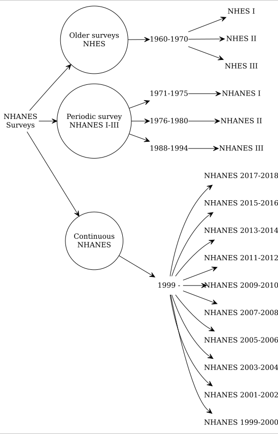
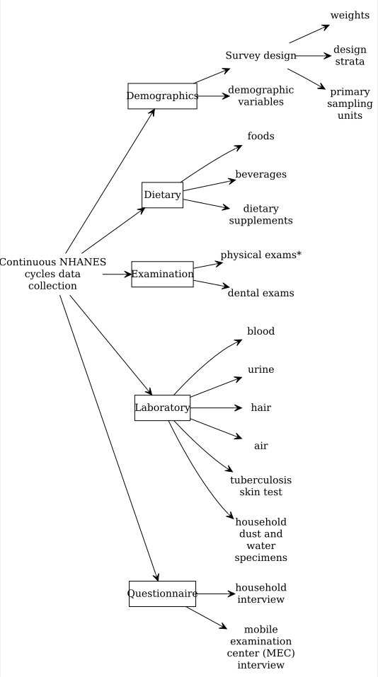

Descriptions
This tutorial introduces CCHS as a cross-sectional survey that collects health-related data and discusses its objectives and data usage. Additionally, it highlights the survey’s evolution and redesigns. For NHANES, the tutorial covers the importance of the dataset, its sampling procedures, history, data files, and documents. It also discusses how to combine data from different cycles, handle missing data, and deal with outliers. NHIS, another CDC-supported survey, is briefly introduced as a source of annual health-related data. There are some changes in the dataset due to the COVID-19 pandemic, e.g., fewer variables compared to pre-pandemic datasets. Otherwise, the main purpose of these datasets remained the same across survey cycles.
CCHS
Overview
CCHS is a cross-sectional survey that collects vital health-related data, including health status, healthcare utilization, and health determinants, from the Canadian population. Available in both official languages, this survey relies on a substantial sample size to provide reliable estimates at various geographical levels every two years.
Objectives of the CCHS
The CCHS has four primary objectives: supporting health surveillance programs at national, provincial, and intra-provincial levels; offering a single data source for health research on small populations and rare characteristics; providing timely and easily accessible information to a diverse user community; and maintaining flexibility to address emerging health issues within the population.
Data Products and Usage
The CCHS generates annual microdata files and combines two years of data for analysis. Users can also combine data from different years to study specific populations or rare characteristics. The data is primarily used for health surveillance and population health research, benefiting federal and provincial health departments, social service agencies, government bodies, and researchers from various fields. Non-profit health organizations and the media also utilize CCHS results to raise awareness about health concerns.
Evolution and Redesigns
The CCHS started collecting data in 2001, transitioning to annual data collection in 2007 with a sample size adjustment to 65,000 respondents per year. It has undergone two significant redesigns to enhance its utility. The 2015 redesign updated sampling methods, adopted a new sample frame, modernized health content, and reviewed the target population. In 2022, the survey underwent another redesign, further updating content and transitioning to an online electronic questionnaire (EQ) for direct self-reporting by selected respondents. Both redesigns involved extensive consultations with stakeholders, including federal, provincial, and territorial partners, health region authorities, and academics.
NHANES
This section covers
- Introduction to the NHANES dataset, highlighting its significance in evaluating the health and nutritional status of U.S. adults and children.
- Sampling Procedure details, explaining the multi-stage sampling strategy and emphasizing the importance of using survey features like weights, strata, and primary sampling units for population-level estimates.
- Survey History with a visualization representing different NHANES survey cycles.
- NHANES Data Files and Documents:
- Explains the data’s file format, mostly in SAS transport file format (.xpt).
- Breaks down the NHANES components, which include demographics, dietary, examination, laboratory, and questionnaire data.
- Provides guidelines on combining data from different cycles and handling missing data or outliers.
Overview
National Center for Health Statistics (NCHS) conducts National Health and Nutrition Examination Survey (NHANES) (CDC,NCHS 2023). These surveys are designed to evaluate the health and nutritional status of U.S. adults and children. These surveys are being administered in two-year cycles or intervals starting from 1999-2000. Prior to 1999, a number of surveys were conducted (e.g., NHANES III), but in our discussion, we will mostly restrict our discussions to continuous NHANES (e.g., NHANES 1999-2000 to NHANES 2017-2018).
CDC,NCHS (2023)
Sampling Procedure:
It is a probabilistic sample (we know probability of getting selected for all individuals). This sample is unlikely to be representative of the entire population, as some under/oversampling occurs (unlike SRS), and samples may be dependent (due to proximity of some samples). For example, household with the following characteristics may be oversampled in NHANES, e.g., African Americans, Mexican Americans, Low income White Americans, Persons age 60+ years.
Sampling Procedure:
- not obtained via simple random sample
- multistage sample designs
- A sample weight is assigned to each sample person where weight = the number of people in the target population represented by that sample person in NHANES
NHANES used multistage sample designs:
- Stage 1: PSU/clusters = geographically contiguous counties. 50 states - divided into ~3100 counties. Each PSU is assigned to a strata (e.g., urban/rural or PSU size etc.). The counties are randomly/PPS selected using a 2-per-stratum design. Complex sample variance estimation requires PSU + strata (masking involved).
- Stage 2: each selected county is broken into segments (with at least ~50-100 housing units). Segments are randomly/PPS selected.
- Stage 3: each selected segment is divided into households. Households are randomly selected.
- Stage 4: Within each sampled household, an individual is randomly selected.
To obtain population-level estimate, we must utilize the survey features (weights, strata, PSU/cluster)
Survey history
Overall NHANES survey history

NHANES datafile and documents
File format
The Continuous NHANES files are stored in the NHANES website as SAS transport file formats (.xpt). You can import this data in any statistical package that supports this file format.
Continuous NHANES Components
Continuous NHANES components separated to reduce the amount of time to download and documentation size:

Broadly, continuous NHANES data are available in 5 categories:
- Demographics
- Dietary
- Examination
- Laboratory
- Questionnaire
Combining data
Different cycles
It is possible to combine datasets from different years/cycles together in NHANES. However, NHANES is a cross-sectional data, and identification of the same person accross different cycles is not possible in the public release datasets. For appending data from different cycles, please make sure that the variable names/labels are the same/identical in years under consideration (in some years, names and labels do change).
The following data have not been released on the NHANES website as public release files due to confidentiality concerns:
- adolescent data on alcohol use
- smoking
- sexual behavior
- reproductive health and drug use
Within the same cycle
Within NHANES datasets in a given cycle, each sampled person has an unique identifier sequence number (variable SEQN).
Missing data and outliers
CDC (2023) recommends:
CDC (2023)
Key points on NHANES data analysis and missing data handling:
- If less than 10% of your data for a variable are missing, it’s generally acceptable to proceed with your analysis without further evaluation or adjustment. However, when more than 10% of data is missing, assess if the missing values are evenly distributed across socio-demographic characteristics. Consider options like imputation or adjusted weights if necessary.
- Identify and treat ‘refusal’ or ‘do not know’ responses as missing data to prevent distorted results in statistical analyses. Recode these responses as missing values, using either a period (.) for numeric variables or a blank for character variables.
- Be cautious about outliers with exceptionally large weights, as they can significantly impact your estimates. Analysts should decide whether to include or exclude these influential outliers from the analysis, taking into account their potential impact on results.
NHANES documents
The following websites could be helpful: - For more information about NHANES design.
- Visit US CDC website and do a variable keyword search based on your research interest (e.g., arthritis).
NHIS
Like NHANES, National Health Interview Survey (NHIS) is supported by the CDC and is a large-scale multi-stage cross-sectional survey. The NHIS survey includes information on population disease prevalence, extent of disability, and use of health care services. In contrast to the NHANES that provides data every 2 years, NHIS provides data annually.
To obtain population-level estimate, we must utilize the survey features (weights, strata, PSU/cluster)